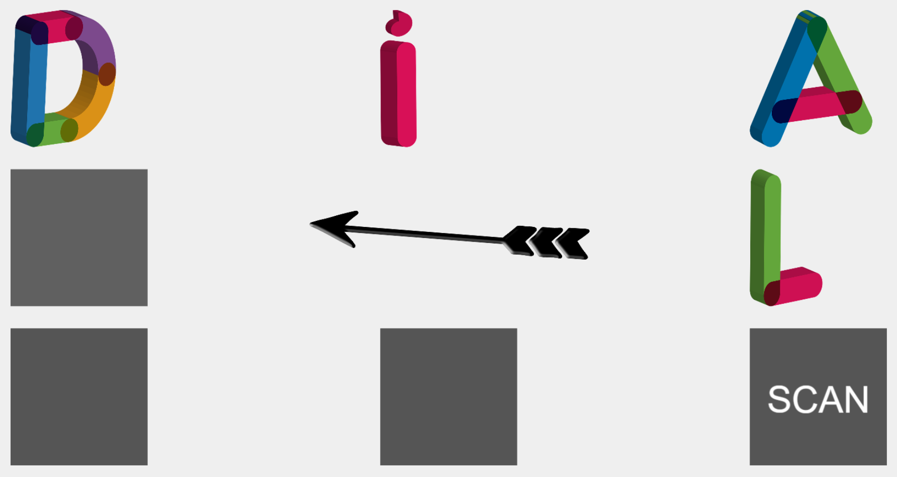

Virtual Dial Scan
VirtualDialScan is a Virtual representation of a Dial Scan (e.g. of a physical dial scan tool: http://oec.okstate.edu/loan/detail.php?item_id=1641).
Dial Scans are very popular amongst people/children that have communication difficulties. Dial Scan is a rotary scanning symbol communicator designed for people who need a switch-activated communication device.

Virtual Dial Scan currently provides the following features:
- Eight selectable spots (4 corners + 4 middle positions)
- Display Images in large scale once they are selected
- Display Text in large scale once they are selected
- Customizable spots (person can select images/videos/sound for each spot):
- Upload an image from file
- Search images in PixaBay
- Ability to save/recall a specific DialScan configuration
Reasoning behind this software - Fikalab and APCC
This software was developed along the FikaLab and APCC initiative, by Critical Software. This initiative invited Engineers to help APCC, which is the Coimbra Cerebral Palsy Association by adapting electronic toys or developing new ones that children with cerebral palsy can use to learn and play. Within that initiative we came up with the idea to create a virtualized version of the Dial Scan, a popular hardware used by children with cerebral palsy to communicate, play, learn and participate in educational activities.
This is a work in progress and any contrinutions are welcome.
Ackownlegments/Technical Specifications
This work would've never been possible without many open-source initiatives and free software. This software was built using the following plattforms/sdks:
- Phaser - https://phaser.io/
- Pixabay - https://pixabay.com/
- GitHub - https://github.com/
- Github Gists https://gist.github.com/